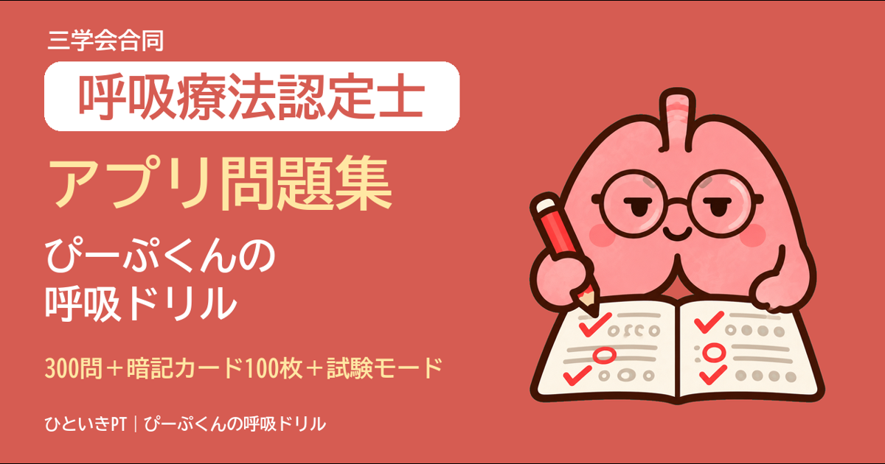

呼吸療法認定士の勉強に。問題集アプリと、予想問題・勉強法の記事
3学会合同呼吸療法認定士に、1回落ちて1年後に合格した理学療法士（PT）の「すーさん」が作りました。相棒は、Tシャツに住む肺の「ぴーぷくん」です。
問題集アプリ「ぴーぷくんの呼吸ドリル」
予想問題300問、暗記カード100枚、本番と同じ100問・170分の試験モード。スマホのブラウザで開くだけで使え、インストールも登録もいりません。無料で試せる範囲もあります。
無料で読める記事（note）
章ごとの予想問題30問＋くわしい解説（note）
試験の範囲に沿った20章。1章30問に、まちがいの選択肢がなぜちがうのかまで書いた解説がついています。
- 01 呼吸療法総論
- 02 呼吸管理に必要な解剖
- 03 呼吸管理に必要な生理
- 04 血液ガスの解釈
- 05 呼吸機能とその検査法
- 06 胸部の画像診断
- 07 呼吸不全の病態と管理
- 08 薬物療法
- 09 呼吸リハビリテーション
- 10 吸入療法
- 11 酸素療法
- 12 人工呼吸器の基本構造と保守および医療ガス
- 13 気道確保と気道管理
- 14 人工呼吸〜換気モードとその適応・離脱
- 15 NPPVとその管理法
- 16 開胸・開腹手術後の肺合併症
- 17 新生児・小児の呼吸管理
- 18 人工呼吸中のモニター
- 19 人工呼吸中の集中治療
- 20 在宅人工呼吸
20章をまとめて読めるマガジン：【呼吸療法認定士】全20章まとめ｜予想問題600問＋解説
問題と解説は、公開されているガイドラインや学会の資料で確かめて作ったオリジナルです。試験勉強のためのもので、医療の判断には使わないでください。